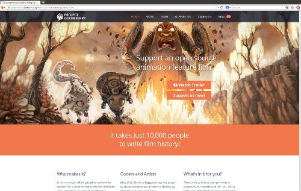

電影也要開源創作：The Gooseberry Project 現正火熱進行群眾募資！

魏德聖導演所監製的知名電影《海角七號》中，錄有一段這樣的經典台詞：「土地也要 BOT，山也 BOT，連海也要給我 BOT！」現在，我們可以依樣造句的改為：「軟體也要 Open Source，教材也要 Open Source，現在，連電影和藝術創作也要給我 Open Source！」因為，現在正有一部電影，打算以開源工具與群眾募資 (crowdfunding) 的基礎來打造，並且在商業播放週期結束之後，還會進一步採創用CC 的方式對外散布，它就是 Gooseberry Project！

圖1：Gooseberry Project 募款首頁：
https://gooseberry.blender.org/wp-content/themes/gooseberry/
Gooseberry Project 的幕後推手是 Blender Institute，而該組織的源頭，則是為了專職維護與持續開發自由開源 3D 繪圖軟體 Blender，而成立的非營利組織 Blender Foundation。相較於 Blender Foundation，Blender Institute 於 2007 年被另行成立的主要目的，是要以更具效率與組織化的手法，來促進開源 3D 電影、遊戲或特效的各項推展目標，而不再僅是將目光與心力聚焦於自由開源軟體專案的程式碼創作。
而此次的 Gooseberry Project 與 Blender Institute 先前數個小品電影作品不同之處在於，這將是一部完整的長篇劇情片, 並會有超過 12 組世界各地的獨立電影工作室參與製作，共工式地為影片注入多元風格與文化融合的特色！這些動畫工作室包含 Autour de Minuit、The Blender Institute、Character Mill、CG Cookie、David Revoy、Gecko Animation、Ideas Fijeas、Kampoong Monster、Studio Lumikuu、Mad Entertainment、Ovni VFX、Poked Studio、Pataz Studio，以及 Pitchi Poy、Vivify 等。
本片電影執導者為 Mathieu Auvray，劇情則由 Esther Wouda 以及 Mathieu Auvray 所共同撰寫。影片劇本與相關腳本的編寫目前仍在進行中，預計將於 8 月底定。主線劇情是由一隻追尋生活意義，名字叫作 Michel 的綿羊作為主角來擔綱演出，故事的預定架構，將會充滿歡笑，並以荒誕不經與歌頌冒險與愛的方式展開！
Gooseberry Project 預計約需耗時 18 個月完成，由於影片規模及幕後工作量之龐大均有別以往，故財政資源需求量也高，當前影片總預算粗估約需 3.5 – 6 百萬歐元。Blender Institute 除了以補助款及相關贊助經費來支應外，現亦正透過群眾募資的方式來向外進行資金籌措，預估需募集 10,000 位朋友的支持，並藉此充實 500,000 歐元的資金，來穩定電影製作後續的支出。
對 Gooseberry Project 有興趣的支持者與付款者，可透過此次的群眾募資，一併訂購 Blender Cloud 上的相關服務，以後續享有存取所有 Blender Institute 數位資源的回饋，這些資源包含 Blender 工具程式的訓練教材，以及先前所有開放電影的相關資料。此外，在 Gooseberry 製作期間，Blender Cloud 也會不斷同步更新電影的最新狀態，讓訂購者能隨時掌握影片動態，享受如同戲院貴賓席的特別禮遇！
最後，Gooseberry Project 所完成的電影作品，其著作權利將 100% 由電影製作者所擁有，然而影片收益，則會在支付完電影製作期間的各項必要支出之後，轉由所有協助完成電影的參與者所共享，其後，在電影熱銷期結束之後，所有影片後續的發行與散布，將會依照「創用CC-姓名標示授權條款 (Attribution 4.0 International)」的規範與模式來進行，轉而將這些素材正式開源化，並讓後續的創作者可以取用，在此基礎上建立自己的衍生作品！
想成為 Gooseberry 貢獻者一員的話，可以至 Blender Cloud 募款專頁，選擇適合您的支持方案貢獻己力，以共同推動開源電影的嶄新創作風潮！
參考網址：
- Project Gooseberry
https://gooseberry.blender.org/wp-content/themes/gooseberry/ - Blender Open Movie－Gooseberry Project 預告片
https://www.gemhorn.com/web/index.php/incg-shorts/item/484-gooseberry-project - Project Gooseberry 啟動, 尋求 10,000 支持者共同紀錄影片歷史
https://www.blendernation.com/2014/03/09/project-gooseberry-launches-seeks-10000-supporters-to-write-film-history/ - Blender Institute
https://www.blender.org/institute/ - Project Gooseberry 募款專頁–截止日 2014 年 5 月 8 日、格林威治標準時 17:00
https://cloud.blender.org/gooseberry/ - Prject Gooseberry–預定以「創用CC-姓名標示」方式釋出的開源動畫長片
https://creativecommons.org/weblog/entry/42518